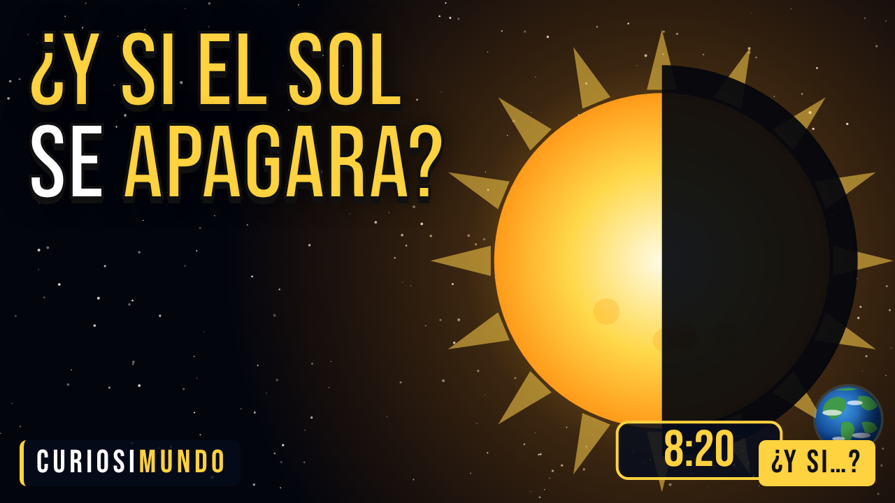

<!doctype html>
<!-- CURIOSIMUNDO · 11 · ¿Y si el Sol se apagara? (TikTok, 9:16, 30.91 s). Dato con número en el fotograma 0. -->
<html data-width="1080" data-height="1920" data-fps="30" data-duration="30.91" data-safe-zone="reels">
<head><link rel="stylesheet" href="lib/cm.css"><script src="lib/cm.js"></script><script src="lib/space.js"></script>
<style>
  body { background: radial-gradient(1200px 1400px at 50% 40%, #1565C0, #0B2A5B 75%); }
  .ttl { position:absolute; left:40px; right:40px; top:250px; height:290px; display:flex; align-items:center; justify-content:center; text-align:center; z-index:5;
         font: 400 118px/.92 'Bebas Neue'; text-shadow: 0 10px 40px rgb(0 0 0 / .6); opacity:0; }
  .ttl em { font-style:normal; color:#FFD23F; }
  #frame { position:absolute; left:0; top:556px; width:1080px; height:616px; border-top:4px solid #FFD23F; border-bottom:4px solid #FFD23F; z-index:3; pointer-events:none; }
  #vcaps { position:absolute; inset:0; z-index:8; pointer-events:none; }
  .vc { position:absolute; left:50px; right:50px; top:1240px; text-align:center; isolation:isolate; font: 850 86px/1.1 Inter; letter-spacing:-.02em; }
  .vc .w { display:inline-block; padding:0 .14em; --hl:0; position:relative; color: color-mix(in oklab, #0B2A5B calc(var(--hl) * 100%), #fff);
           text-shadow: 0 5px 0 rgb(0 10 40 / calc(.7 - var(--hl) * .7)), 0 8px 30px rgb(0 0 0 / calc(.5 - var(--hl) * .5)); }
  .vc .pl { position:absolute; left:0; top:.02em; height:1.08em; border-radius:.22em; z-index:-1; background:#FFD23F; }
  #promo { z-index: 6; }
</style></head>
<body>
<audio src="voz.mp3"></audio>
<audio src="musica.mp3" data-volume="0.5" data-duck="0.45" data-fade-out="1"></audio>
<audio src="sfx.mp3" data-volume="0.6"></audio>
<section class="scene" id="s0" data-start="0" data-duration="6.49"></section>
<section class="scene" id="s1" data-start="6.39" data-duration="4.1"></section>
<section class="scene" id="s2" data-start="10.39" data-duration="2.11"></section>
<section class="scene" id="s3" data-start="12.4" data-duration="4.88"></section>
<section class="scene" id="s4" data-start="17.18" data-duration="5.21"></section>
<section class="scene" id="promo" data-start="22.29" data-duration="8.62"></section>
<div id="frame"></div><div id="titles"></div><div id="vcaps"></div>
<script>
const D = 30.91, S = {s0: 0, s1: 6.39, s2: 10.39, s3: 12.4, s4: 17.18, promo: 22.29};
gm.wait(fetch('voz.json').then(r => r.json()).then(words => {
  const W = CM.W(words, 0), G = { global: true }, tl = gm.timeline(null, G), $ = id => document.getElementById(id), mk = CM.mk;
  const sv = (id, bg) => { const s = mk('svg', { viewBox: '0 0 1080 1920', width: 1080, height: 1920, style: 'position:absolute;inset:0' }, $(id)); CM.defs(s); if (bg) $(id).style.background = bg; return s; };
  const band = (z, y = 560) => mk('svg', { x: 0, y, width: 1080, height: 608, viewBox: '0 0 1920 1080', preserveAspectRatio: 'xMidYMid slice' }, z);
  const scene = (id, bg) => { const z = sv(id, bg || 'radial-gradient(1200px 1400px at 50% 40%, #1565C0, #0B2A5B 75%)'); return band(z); };
  const shake = (el, at, a = 14) => tl.to(el, { x: a, duration: .06 }, at).to(el, { x: -a, duration: .08 }, at + .06).to(el, { x: 0, duration: .1 }, at + .14);
  const T = [[0, '<em>8</em> MINUTOS'], [2.49, 'SI EL SOL<br>SE <em>APAGARA</em>…'], [4.08, 'NO TE<br><em>ENTERARÍAS</em>'], [6.54, 'CIELO <em>AZUL</em>…'], [9.03, '¡<em>OSCURIDAD</em>!'], [10.54, 'LA LUNA<br><em>TAMBIÉN</em>'], [12.55, 'LA TIERRA<br><em>SALE DISPARADA</em>'], [15.18, '+<em>100.000</em><br>KM/H'], [17.33, '1 SEMANA:<br><em>BAJO CERO</em>'], [19.86, '1 AÑO:<br><em>−70 °C</em>'], [22.29, '']];
  T.forEach(([at, html], i) => { const h = Object.assign(document.createElement('div'), { className: 'ttl', innerHTML: '<div>' + html + '</div>' }); $('titles').append(h); if (!html) return;
    const end = T[i + 1] ? T[i + 1][0] : 99;
    if (at === 0) { h.style.opacity = 1; tl.fromTo(h, { scale: 1.15 }, { scale: 1, duration: .5, ease: 'expo.out' }, 0); }
    else tl.fromTo(h, { opacity: 0, y: 90, scale: 1.2, filter: 'blur(10px)' }, { opacity: 1, y: 0, scale: 1, filter: 'blur(0px)', duration: .3, ease: 'expo.out' }, at);
    tl.to(h, { opacity: 0, y: -80, duration: .18, ease: 'power2.in' }, end - .18); });
  Object.keys(S).slice(1).forEach(id => tl.from($(id), { opacity: 0, duration: .2 }, S[id]));

  const NIGHT = 'radial-gradient(1200px 1400px at 50% 40%, #0f1a3a, #03050d 75%)';
  const b0 = scene('s0'); const L0 = SP.landscape(b0); const ck = SP.clock(b0, 960, 520, 260); gm.onFrame($('s0'), (l, i) => { L0.sun.spin(i.time); ck.set(500 - i.time * 70); });
  const b1 = scene('s1'); const L1 = SP.landscape(b1); gm.onFrame($('s1'), (l, i) => L1.sun.spin(i.time)); const tA = W('oscuridad') - .1;
  tl.to(L1.dark, { opacity: .72, duration: .15 }, tA).to(L1.night, { opacity: 1, duration: .1 }, tA).to(L1.sun.w, { opacity: 0, duration: .1 }, tA); shake($('s1'), tA, 24);
  const b2 = scene('s2', NIGHT); SP.stars(b2, 240); const mo = SP.moon(b2, 960, 540, 260); tl.to(mo, { opacity: 0, duration: 1.4 }, W('desaparecería') - .2);
  const b3 = scene('s3', NIGHT); const sg = mk('g', {}, b3); SP.stars(sg, 300, 3840, 1080, 'f'); const e3 = SP.earth(b3, 960, 540, 200); gm.onFrame($('s3'), (l, i) => { const t = i.time - S.s3; sg.setAttribute('transform', `translate(${-t * 500} 0)`); e3.rot(i.time); });
  const b4 = scene('s4', NIGHT); SP.stars(b4, 200); const e4 = SP.earth(b4, 640, 540, 280); gm.onFrame($('s4'), (l, i) => e4.rot(i.time * .5)); const fr = mk('circle', { cx: 640, cy: 540, r: 282, fill: '#e6f6ff', opacity: 0 }, b4);
  const th = SP.thermo(b4, 1450, 880, 680); const k1 = W('semana'), k2 = W('año');
  gm.onFrame($('s4'), (l, i) => { const t = i.time, temp = t < k1 ? 15 : t < k2 ? 15 - gm.clamp((t - k1) / 1) * 18 : -3 - gm.clamp((t - k2) / 1.5) * 69; th.set(gm.clamp((temp + 80) / 100), temp > 0 ? '#E5484D' : '#5bc0ff'); th.lab.textContent = Math.round(temp) + ' °C'; fr.setAttribute('opacity', gm.clamp((15 - temp) / 90) * .6); });

  /* promo */
  const pr = $('promo'); pr.style.background = 'radial-gradient(1200px 1400px at 50% 40%, #1d2a5a, #050a1a 75%)';
  pr.innerHTML = `<div style="position:absolute;left:0;right:0;top:250px;text-align:center;font:400 104px/.95 'Bebas Neue'">¿QUIÉN <span style="color:#FFD23F">SOBREVIVIRÍA</span>?<br>TE LO CUENTO EN YOUTUBE</div>
    <div id="card" style="position:absolute;left:90px;width:900px;top:560px;height:506px;border-radius:26px;overflow:hidden;box-shadow:0 30px 80px rgb(0 0 0 / .6);border:6px solid #fff">
      <div style="position:absolute;left:50%;top:50%;width:170px;height:120px;margin:-60px 0 0 -85px;background:#E5484D;border-radius:30px"></div>
      <div style="position:absolute;left:50%;top:50%;margin:-32px 0 0 -18px;border-left:62px solid #fff;border-top:34px solid transparent;border-bottom:34px solid transparent"></div></div>`;
  tl.from(pr.children[0], { y: 60, opacity: 0, duration: .4, ease: 'expo.out' }, S.promo + .1).from('#card', { scale: .6, opacity: 0, duration: .5, ease: 'back.out(1.6)' }, S.promo + .3)
    .to('#card', { scale: 1.04, duration: .5, ease: 'sine.inOut', yoyo: true, repeat: 6 }, S.promo + 1);
  const fq = document.createElement('div'); fq.style.cssText = "position:absolute;left:0;right:0;top:250px;text-align:center;font:400 104px/.95 'Bebas Neue'"; fq.innerHTML = '¿QUÉ HARÍAS TÚ<br>EN <span style="color:#FFD23F">8 MINUTOS</span>?'; pr.append(fq); tl.to(pr.children[0], { opacity: 0, y: -40, duration: .2 }, 25.45).from(fq, { opacity: 0, scale: 1.3, duration: .35, ease: 'expo.out' }, 25.55);
  /* subtítulos verticales palabra a palabra */
  const ws = words.map(w => ({ text: w.word, start: w.start, end: w.end })), ph = [[]];
  ws.forEach((w, i) => { const cur = ph.at(-1), prev = ws[i - 1];
    if (cur.length && (cur.length === 3 || cur.map(x => x.text).join(' ').length + w.text.length > 16 || w.start - prev.end > .28 || /[.!?,:…]$/.test(prev.text) || /^¿/.test(w.text))) ph.push([]);
    ph.at(-1).push(w); });
  const ct = gm.timeline(null, G), els = ph.map(p => { const el = document.createElement('div'); el.className = 'vc'; el.innerHTML = '<i class="pl"></i>' + p.map(w => `<span class="w">${w.text}</span>`).join(' '); $('vcaps').append(el); return el; });
  return document.fonts.ready.then(() => ph.forEach((p, k) => {
    const el = els[k], sp = el.querySelectorAll('.w'), pl = el.querySelector('.pl'), nx = ph[k + 1], bx = i => ({ x: sp[i].offsetLeft, width: sp[i].offsetWidth });
    ct.fromTo(pl, { ...bx(0), scale: .5, opacity: 0 }, { scale: 1, opacity: 1, duration: .16, ease: 'back.out(2)' }, p[0].start - .04);
    p.forEach((w, i) => { ct.fromTo(sp[i], { opacity: 0, y: 40, scale: .6 }, { opacity: 1, y: 0, scale: 1, duration: .22, ease: 'back.out(2.4)' }, w.start - .06);
      if (i) ct.to(pl, { ...bx(i), duration: .1, ease: 'power3.out' }, w.start - .08);
      ct.to(sp[i], { '--hl': 1, duration: .05 }, w.start - .03).to(sp[i], { '--hl': 0, duration: .05 }, p[i + 1] ? p[i + 1].start - .08 : Math.min(w.end + .3, nx ? nx[0].start - .2 : 99)); });
    ct.to(el, { opacity: 0, duration: .12 }, nx ? nx[0].start - .18 : p.at(-1).end + .7);
  }));
}));
</script>
</body>
</html>
